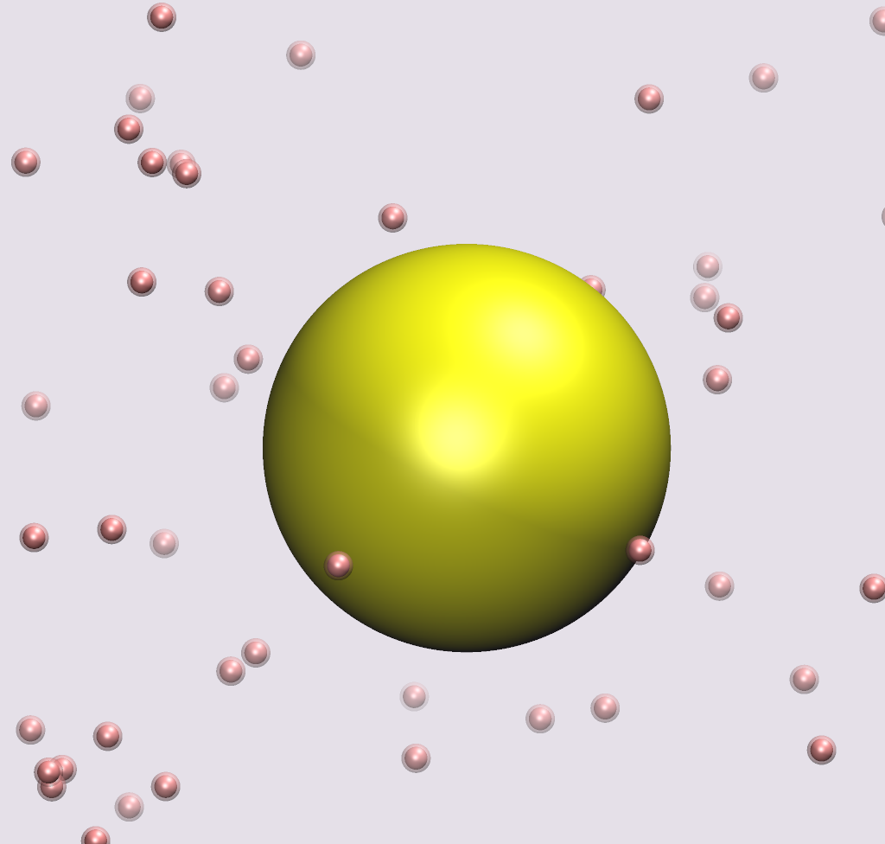
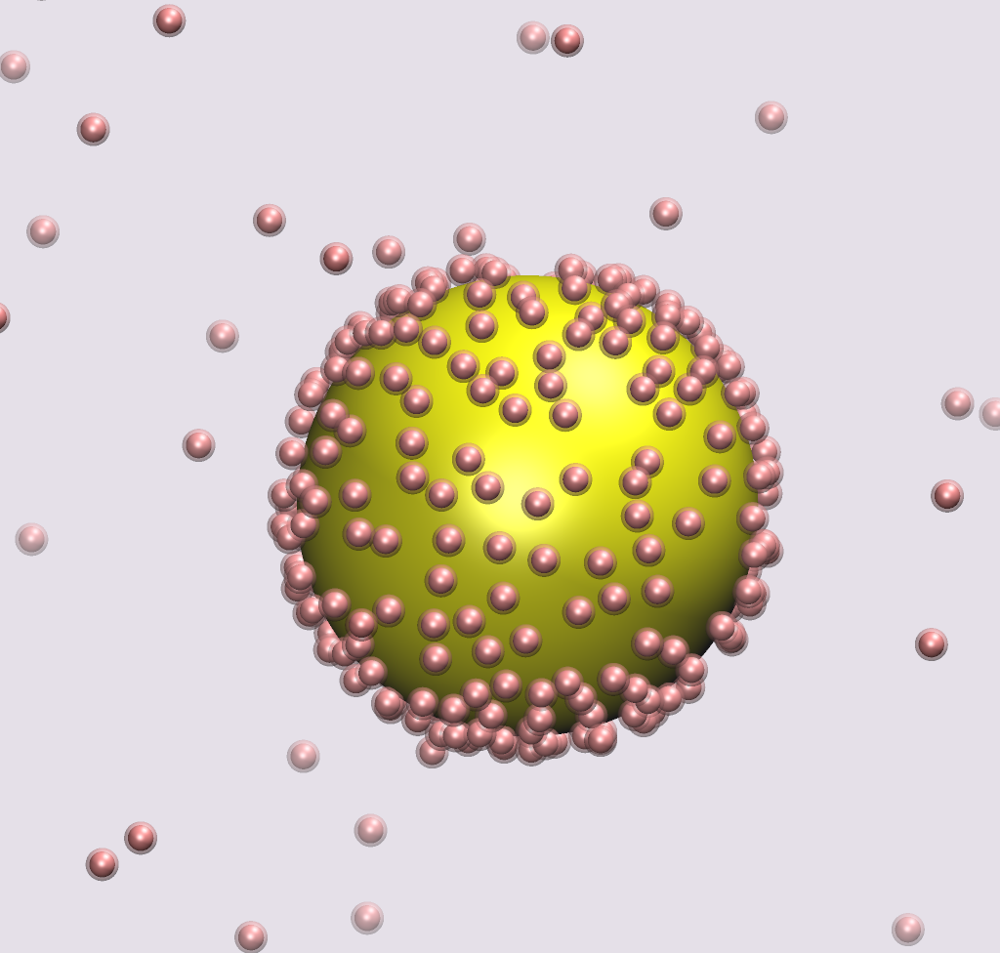
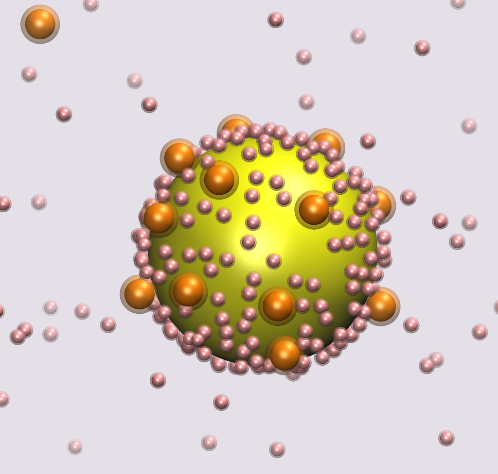

What's this?
BioNano-cgMD (Biological Nanoscale coarse-grain Molecular Dynamics) is a set of tools designed to simulate the interactions and kinetics of Nanoparticles in biological enviornments of aqueous solutions containing proteins.
Installing and running
A simulation can be run in a very few steps, just download the code, uncompress it and compile it:
$ cd src/
$ ./compile.sh
$ cd ..
$ ./genConfig.py
$ ./mdgpu_np setup.dat
Having trouble?
Check out the project page at https://github.com/ovilanova/BioNano-cgMD or contact the author